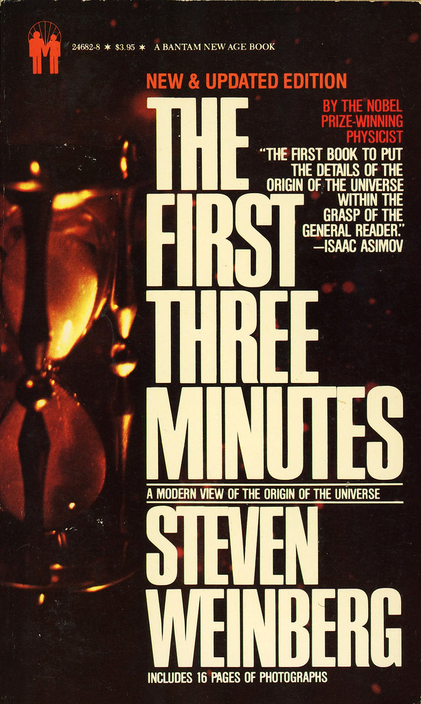

Introduction to the Big Bang
- The Big Bang Theory is the leading explanation for how the universe began.
- The universe as we know it started with an infinitely hot and dense single point.
- The single point inflated and stretched over the next 13.7 billion years.
- The inflation and stretching occurred first at unimaginable speeds and then at a more measurable rate.
- The universe is still expanding today.
History of the Universe
- The Big Bang was not an explosion, but instead, all space stretched simultaneously.
- The universe started very small and expanded quickly to the size of a football, but it did not expand into anything.
- The universe has no borders; therefore, there is no "outside" of it.
- Energy manifested itself into particles that existed for an extremely short amount of time, including gluons and pairs of quarks, which destroyed each other.
- Matter and energy were so hot that they were practically the same stuff.
- Eventually, matter won over antimatter, leaving us with almost all matter and very little antimatter.
- The universe continued to stretch, and quarks began forming new particles, such as protons and neutrons.
- Eventually, the universe grew to one hundred billion kilometers and was cold enough for neutrons to decay into protons, forming the first atom, hydrogen.
- Over millions of years, hydrogen gas clumped together, and stars and galaxies began to form, allowing visible light to pass.
Evidence for the Big Bang
- The Big Bang theory posits that the universe was not infinite but had a sudden beginning.
- Most scientists believed until the middle of the 20th century that the universe was ageless and infinite.
- Edwin Hubble's discovery of galaxies moving away from each other and Einstein's theory of relativity led to a better understanding of gravity.
- In 1964, the discovery of cosmic background radiation, a relic of the early universe, and other observational evidence made the Big Bang the accepted theory in science.
- Technology like the Hubble telescope has helped us understand the Big Bang and the structure of the cosmos.
- Recent observations suggest that the expansion of the universe is accelerating.
Theories of the Big Bang
- Many questions remain unanswered about the Big Bang.
- Scientists are still trying to understand what happened at the beginning of the universe, which is the Big Bang.
- We do not know what happened, and natural laws stop making sense.
- To understand this, we need a theory that unifies Einstein's relativity and quantum mechanics.
- Scientists are working on this theory, but it leaves us with unanswered questions.
- For instance, were there universes before our own, or is this the first and only universe?
- What caused the Big Bang, or did it occur naturally based on laws that we do not understand yet?
- Despite the unanswered questions, we know that the universe started with the Big Bang and gave birth to particles, galaxies, stars, the Earth, and humans.
- We are part of the universe, and we are the universe's way of experiencing itself.
- Let's keep exploring and experiencing the universe until there are no more questions left to ask.
Further Reading
- "The Big Bang: A Very Short Introduction" by Simon Singh
- "The First Three Minutes" by Steven Weinberg
- "Big Bang: The Origin of the Universe" by Simon Singh
- "The Universe in a Nutshell" by Stephen Hawking
- "The Big Bang Theory: What It Is, Where It Came From, and Why It Works" by Karen C. Fox
- "The Birth of the Universe" by Jean-Pierre Luminet
- "The Cosmic Century: A History of Astrophysics and Cosmology" by Malcolm S. Longair
- "The Early Universe" by Edward W. Kolb and Michael S. Turner
- "Before the Big Bang: The Prehistory of Our Universe" by Brian Clegg



{kind=link}